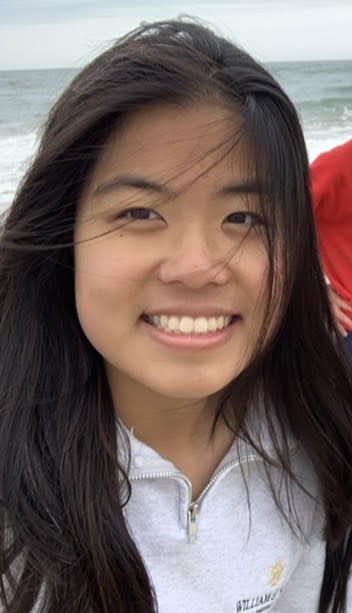

Rachel Huang

Hey! I am a sophomore at William & Mary majoring in computer science and minoring in math. I love anything related
to technology, especially microcontrollers, artificial intelligence, and quantum computing.
My first language was Java, which introduced me to programming
and data structures, but Python is the language that allowed me to delve into things like
machine learning, image manipulation, and games. Through the years, I have also become familiar with web
development frameworks, Google Firebase, and Figma.
I recently completed a summer internship at Black Cape, Inc. where I was able to learn about and
work on a data platform and it's large language model applications. I am extremely
grateful for the opportunity to continue working part-time on the same project team! I am also working on a summer research project
on the optimization of measurement-based quantum circuits, funded by the William & Mary Monroe Scholar program.